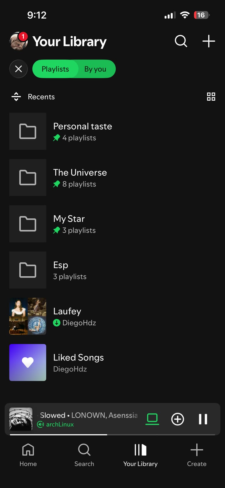
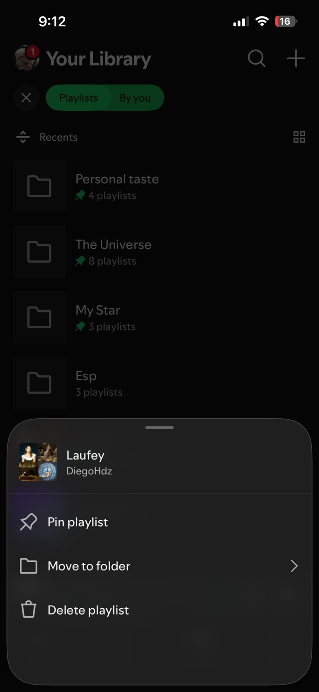
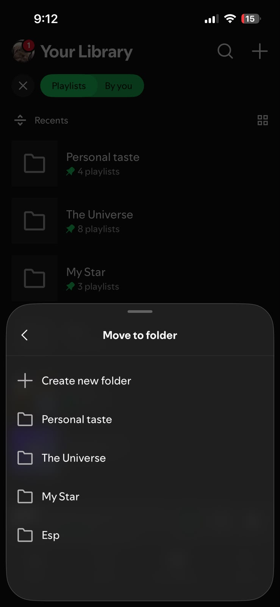
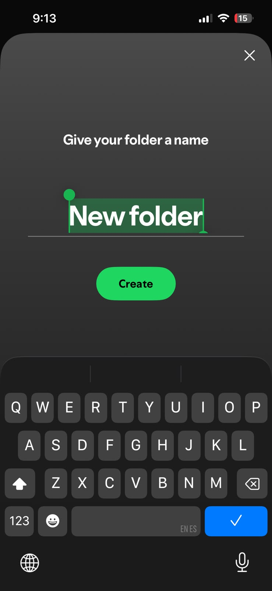
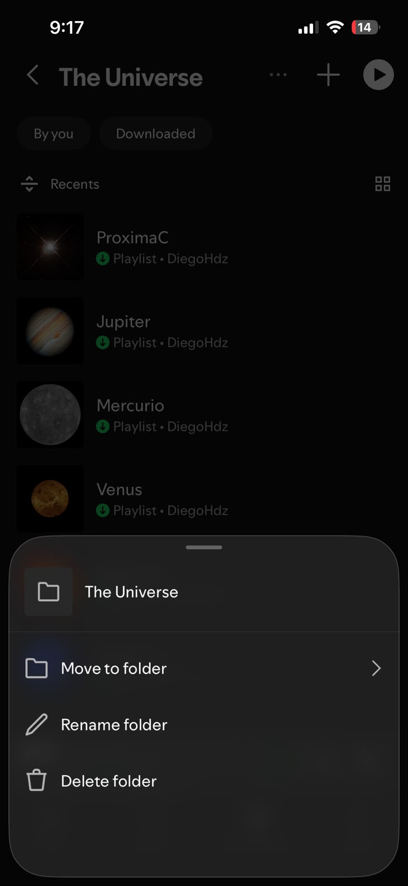
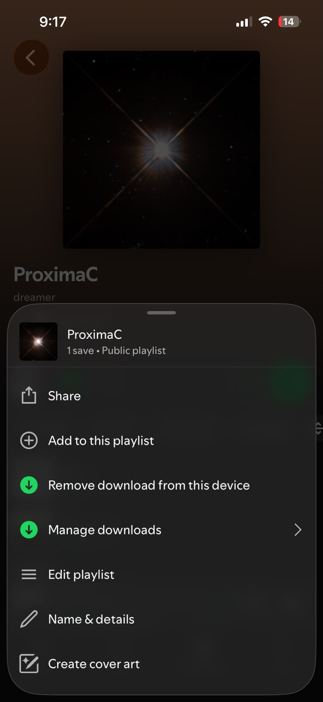
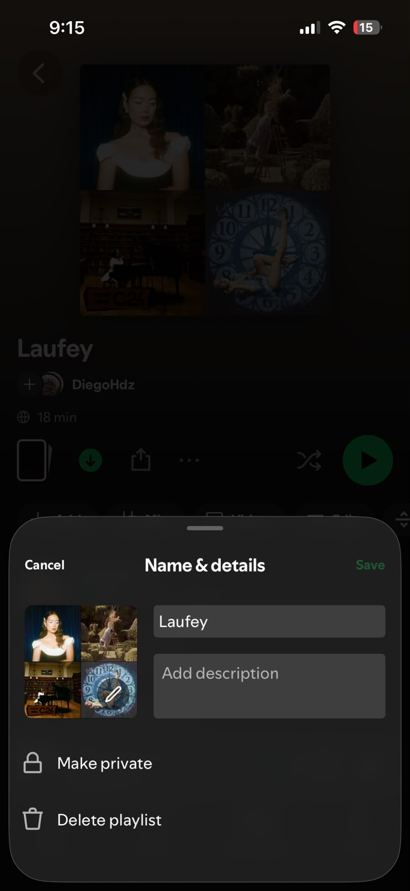
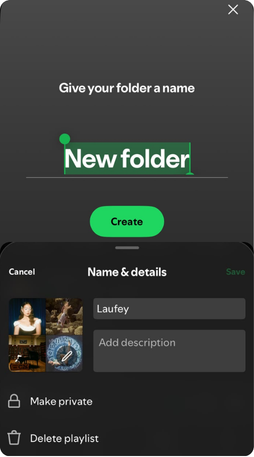

TC1004B.502 · Lab 2 · Visual Design + UX/UI
Diego Hernández Rangel · A01710524
App: Spotify
Feature: Creating a playlist folder and filling it with playlists.
The task: A user with many playlists (gym, study, trips, moods) wants to group them into folders so the Library is not one long mixed list.

In your library all your playlists and folders will appear.

Right there you can move to a folder.

It is created as "New folder" with a generic grey icon.

Only the name can be changed. There is no cover, color or icon option.
How many steps? 4 or more, plus extra steps for every additional playlist.
Is the navigation clear? Yes and it is easy to find the feature.
Are buttons and elements easy to identify? The buttons are clear, but every folder uses the same generic icon, so folders look identical.
Is the information well organized? Folders cannot be told apart at a glance.
No visual identity. Playlists have covers, folders do not.

In this case there is no option to add an image to the folders, unlike the playlists:


One "New folder" sheet where the user names the folder and chooses a cover with description.

Now you can also add the cover and text all at one when creating the folder.
Steps: Same number of steps, 4 or more depending on the playlists.
Styling: Now you can style the folders.